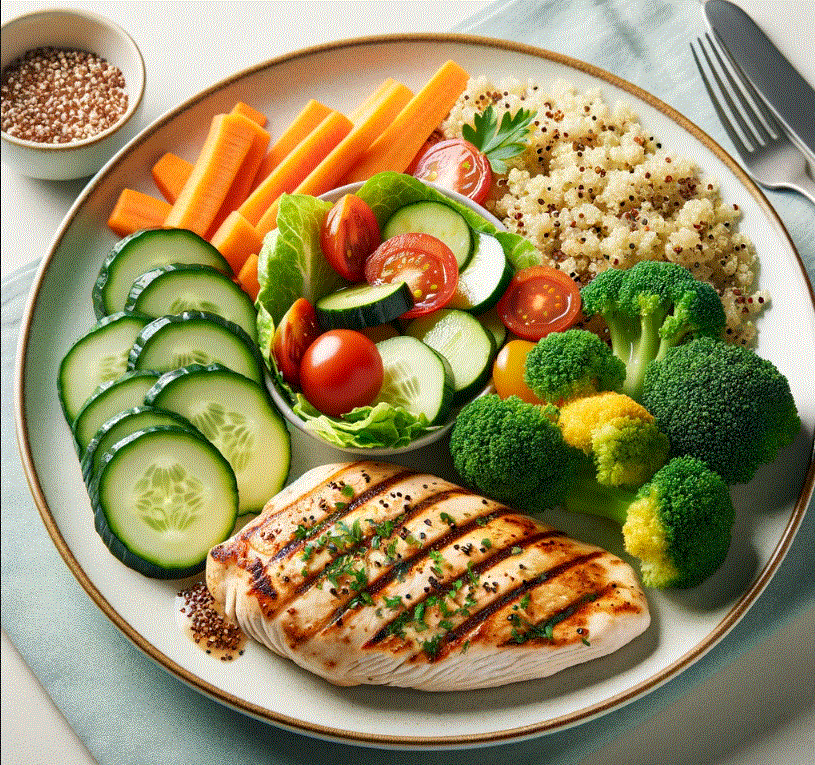

Healthy Eating Habits
Healthy eating is essential for maintaining good health, feeling better, and having more energy. It's not just about strict dietary limitations or depriving yourself of the foods you love.
Why Eat Healthy?
Eating a healthy diet is not about strict limitations, staying unrealistically thin, or depriving yourself of the foods you love. Rather, it's about feeling great, having more energy, improving your health, and boosting your mood.
Key Components of a Healthy Diet
- Fruits and Vegetables: Packed with vitamins, minerals, and fiber.
- Whole Grains: Include foods like whole wheat, brown rice, oats, and quinoa.
- Protein Sources: Choose lean meats, poultry, fish, beans, and nuts.
- Dairy: Opt for low-fat or fat-free dairy products.
Healthy Eating Tips
- Make half your plate fruits and vegetables.
- Switch to whole grains.
- Enjoy lean proteins.
- Limit added sugars and saturated fats.
- Stay hydrated by drinking plenty of water.
Remember, making small changes in your diet can lead to better health over time
Healthy Meal Ideas
Here's a simple and nutritious meal idea to get you started:
- Grilled chicken breast with a side of quinoa and steamed broccoli.
- A mixed salad with a variety of colorful vegetables, topped with a vinaigrette dressing.
Inspirational Healthy Eating
Check out this image of a healthy meal to inspire your next dish!

For more information on healthy eating, visit reputable nutrition websites or consult with a registered dietitian
Happy Healthy Eating!
Stay healthy, stay happy.